I opened all 12 page types at desktop (1440×900) and mobile (390×844) widths and took full-page screenshots. A script then measured contrast, image scaling and cropping, tap-target sizes, heading order, horizontal overflow and console errors on every page. Each finding below has its severity, the pages it affects, the cause and a suggested fix.
Fixes were applied without changing the layout, typefaces, colour family or where images sit. The gold text was deepened to the same hue, and some images were swapped in the same slots. Everything was re-checked on the rebuilt site at both widths: no contrast failures, no skipped headings, no text under 12px, a canonical URL on every page and the correct 404 title.
| ID | Status | What changed / why not |
|---|---|---|
| A1 | Fixed | New --color-gold-ink #8F6419 for text on light backgrounds (headings, nav, buttons, links, prices). Borders, fills and icons keep #C9902E. Button hover text is now dark on the gold fill. |
| A2 | Fixed | --color-mute changed to #6B6B6B; the footer strip is now white/60 at 12px. |
| A3 | Fixed | Arrow links have a 44px tap area with no layout change. Footer links and rows have more spacing. |
| A4 | Fixed | Small buttons and the footer strip are now 12px. |
| A5 | Fixed | Each gallery photo has its own description; tabs read as "Spa & Retreat, 11 photos". |
| A6 / E2 | Fixed | Packages that share a name show the occupancy in the title, e.g. "Nature Lover Ayurvedic Experience (Couple)". |
| B1 | Mostly fixed | The Treatwell screenshot is cropped to just the studio photos (page header and arrows removed). The offer poster is replaced with a Bamboo Villa photo. The Beauty tile is reframed on the facial, away from the other brand's logo. The microblading hero is now the brow-shaping photo, and the before/after collage moved to the booking panel. The watermarked wedding photo is removed. Not changed: the dark leaf texture on the Home and 404 heroes (part of the hero design) and the stock beauty photos (real photos are needed). |
| B2 | Partly | Wellness hero → a 1280px spa photo; Villa banner → a 1400px pool photo. The News hero (1200px) and 800px room photos stay: WordPress has no larger originals, so they need new photography. |
| B3 / C1 | Fixed | The last section no longer fills the whole screen. Image closers get a steady 352–448px height, and sizes now accounts for the cropped width, so the browser loads sharp images. The Villa facilities section has no empty band. |
| B4 | Fixed | Mobile treatment thumbnails are square instead of thin strips. |
| B5 | Fixed | Bali tiles are reframed with object-position. |
| B6 | Partly | The Ayurveda tab and Villa banner no longer repeat nearby photos. The packages still draw on the same few villa photos, which are all the library has. |
| C2 | Improved | Shorter closers mean much less empty space. Remaining cards are centred by design. |
| C3, D3, D4 | Not changed | Card styles, chips and page length are layout and design choices, so I left them as you asked. |
| C4 | Fixed | All review quotes use the same 16px size. |
| C5 | Fixed | News cards show the opening line, and photos are framed higher so heads aren't cut off. |
| C6 / E6 | Fixed | The Villa location line moved under the intro, and the intro now names all three stays. The Bali "Stay" text now describes the stay. |
| C7 | Fixed | The active tab uses white text with a stronger gold bar, and there's more space before the grid. |
| C8 | Fixed | Short descriptions added to the four nail treatments (please check the wording). |
| C9 / C10 | Fixed | Hero buttons are full width on phones; plain headers align on the text baseline. |
| D1 | Improved | Step photos are a steady 2:1 and the side photo is framed on the guests. The section's content is unchanged. |
| D2 | Fixed | Footer rows have more spacing; font size unchanged. |
| E1 | Partly | "per person" added to Refresh your Soul. Mixing USD and IDR needs your decision on an exchange rate. |
| E3 | Partly | "Switzerland" in the nav now shows an external-link arrow. Both Swiss blocks on Home stay (layout). |
| E4 | Not changed | News needs new posts. |
| E5 / E7 | Fixed | The +62 number leads on Bali contacts; the brow CTA heading is gold and an h2. |
| F1–F4 | Fixed | Canonical URL on every page, "Page not found" title (also for unknown slugs), H2s on Packages and Wellness, longer news descriptions. |
| F5 | Not an issue | The maps load correctly. The grey blocks were the screenshot being taken before the lazy maps finished loading. The "empty right third" on Bali was the map too. |
| New | Fixed | A 1px pale seam at the right edge of every gold button (the gradient fill didn't reach the border). |
#C9902E scores 2.8:1 on white and 2.5:1 on the grey #F2F2F2 bands. #CEA642 (active nav, hover) scores 2.29:1. WCAG AA needs 4.5:1 for normal text and 3:1 for large text, so even the 48px page titles fail. The 12px uppercase nav and button labels are the hardest to read.#8F6419 (5.2:1 on white, 4.7:1 on mist). Use it for h1–h4, .btn, .link-arrow and the nav labels in app/globals.css. Keep the current gold for fills, borders, icons and text on dark backgrounds, where it passes (5.7:1 on #222).#7A7A7A on mist is 3.83:1. The 11px footer strip "UBUD · BALI | ERLENBACH · SWITZERLAND" on #222 is 3.71:1.#6B6B6B (4.76:1 on mist) for --color-mute on light backgrounds. On the footer use white/60 or lighter, at 12px or more.py-2 (or min-h-11 on mobile) and increase the footer gap-y. In components/Footer.tsx the Explore grid uses gap-y-1.5..btn-sm from 0.6875rem to 0.75rem or more. Text this small in uppercase with wide letter-spacing is hard to read.data/gallery.ts. Wrap the count in <span aria-label="12 photos"> or add a visually hidden separator.Kosmetik-Studio-Im-Hof-2.jpg is a screenshot of the Treatwell web page, including its "Termin buchen" button, star rating and carousel arrows. It looks broken and is unreadable on mobile.Marni-Promotion.jpg is a social-media poster with the price and inclusions baked in. It repeats the card next to it, the small text is illegible on mobile, and screen readers can't read it.SPA-Beauty-Catalogue_page1_image1.jpg). It shows nothing of the villa or spa and leaves the right 60% of the hero empty.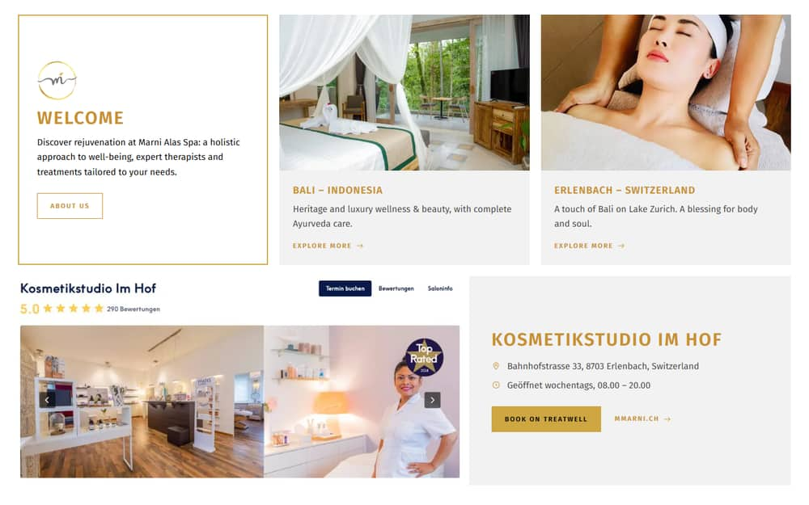
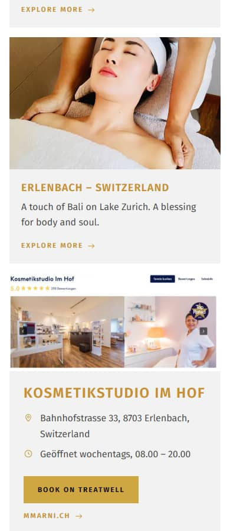
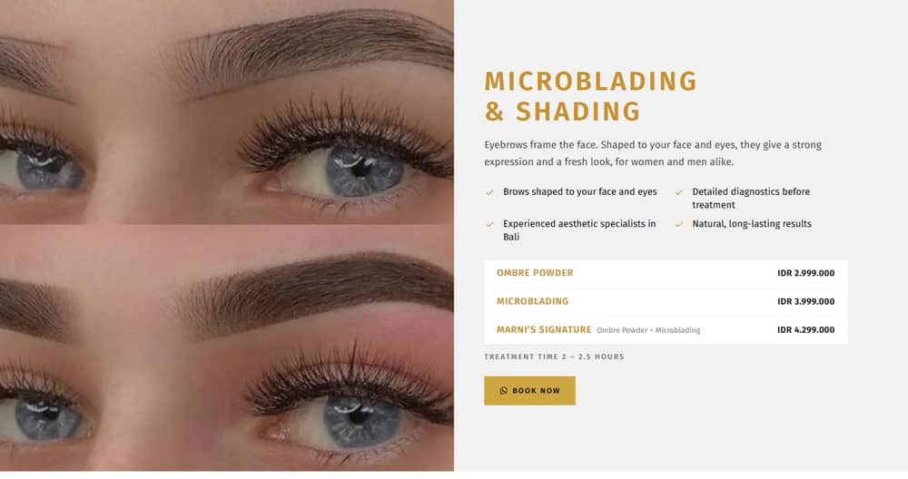
MARC0003_Yoga.jpg: an 800px source shown 1440px wide (1.8×, or 3.6× on a retina screen). It is visibly blurry and the subjects' heads are cut off.puri-manuaba-tour.jpeg and Villa hero precidential-room.jpg: 1200px sources in 1440×350 strips.split hero variant, or cap the hero width at the source width.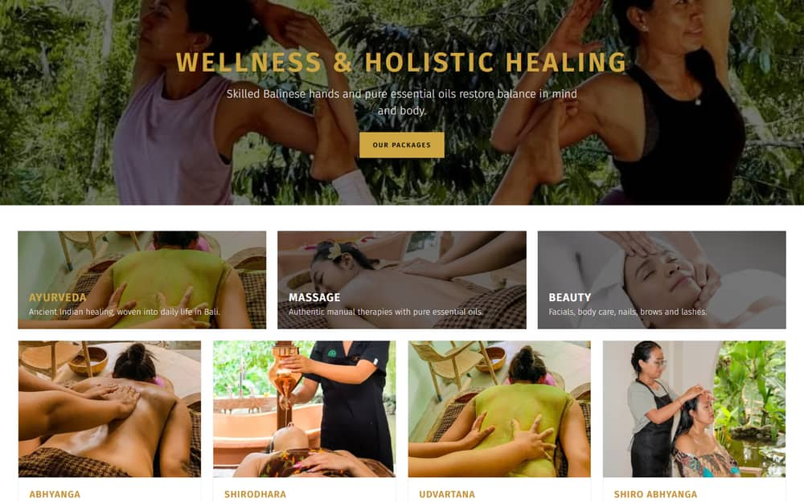
.section-end-grow rule (see C1) stretches these cards to the full screen height, giving boxes such as 329×535. A 3:2 photo in that box shows only about 40% of the image (2.4× crop). The sizes hint is based on box width (22vw ≈ 316px), so the browser downloads a 316px image and stretches it 2.4× to fill the height. The "How to book" photo is the worst case: pixelated, with the guest cut in half.aspect-[4/5] or aspect-[3/4]) instead of filling the height. If a tall tile is wanted, raise sizes to match the rendered height × aspect, e.g. (min-width:1024px) 40vw. Files: components/Closers.tsx, app/bali/page.tsx:148.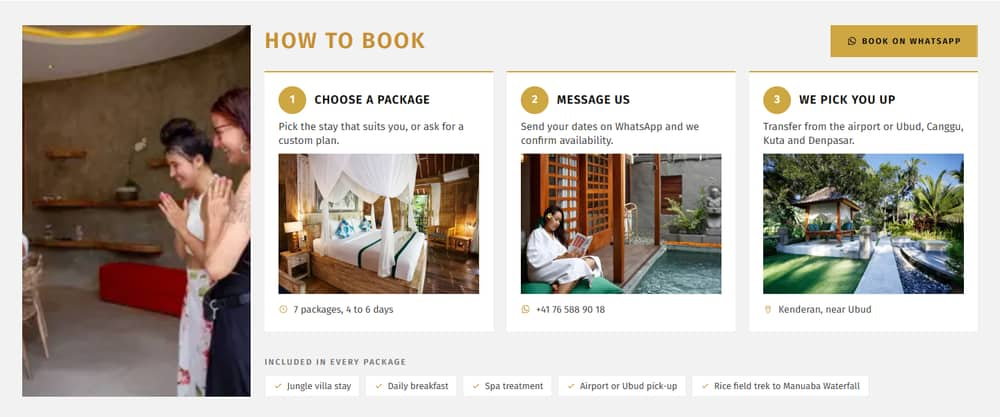
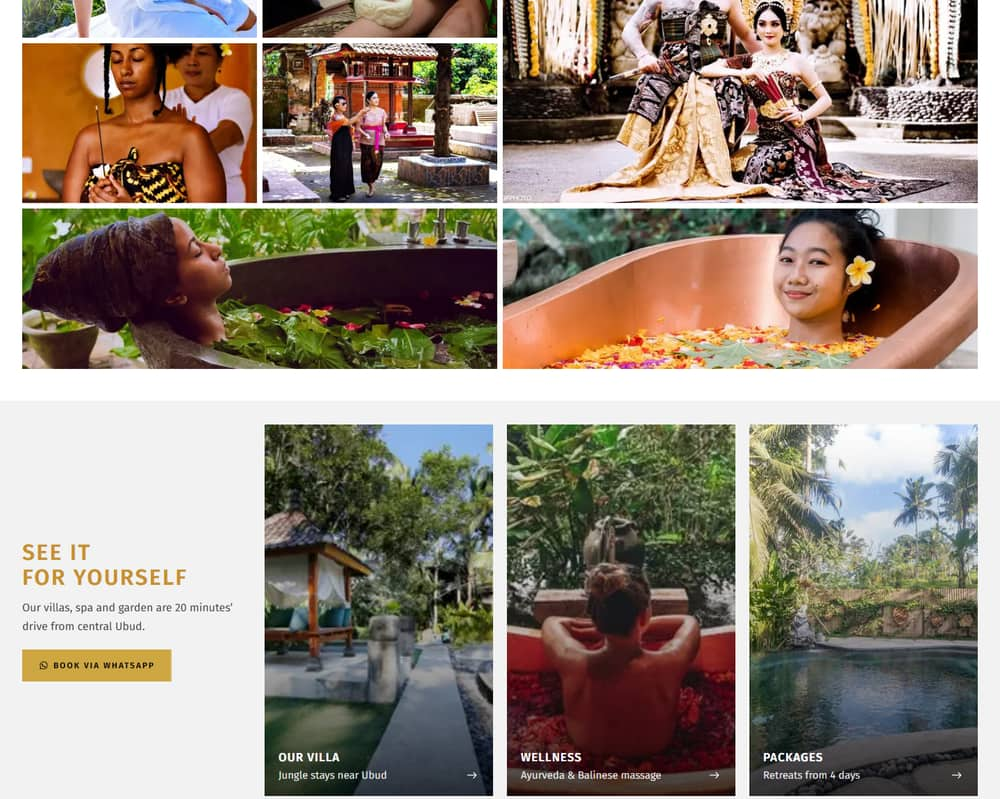
aspect-square self-start) or stack the photo above the text at 16:10 (components/TreatmentCard.tsx).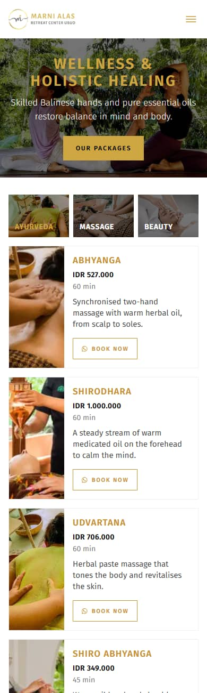
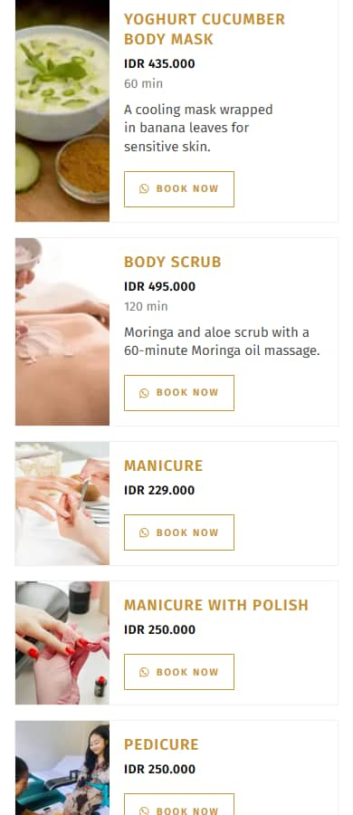
object-position per image.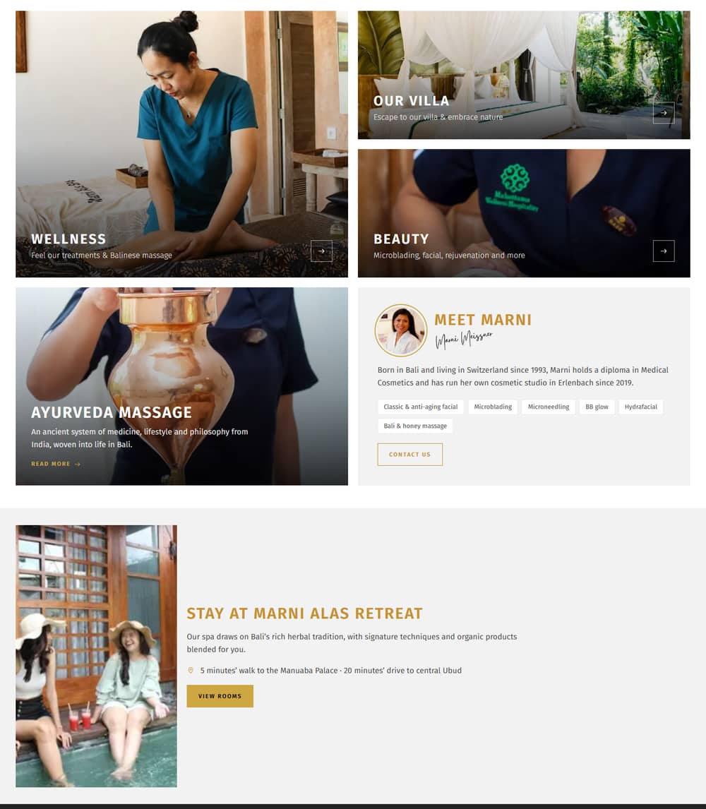
.section-end).section-end in app/globals.css forces the final section to 100svh − header − footer. When the content is short, the extra space becomes empty bands. On Villa there is about 60px above and 200px below "Resort facilities". When the content is images, they stretch instead (B3). On phones the footer is also forced to fill a whole screen (max-md:min-h-[calc(100svh-…)])..section padding. Drop the forced-height footer on mobile.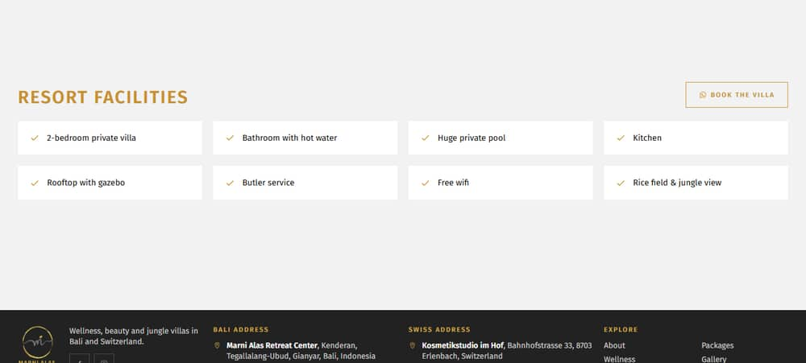
justify-start) with consistent padding, or shrink the card to its content and centre it vertically in the row.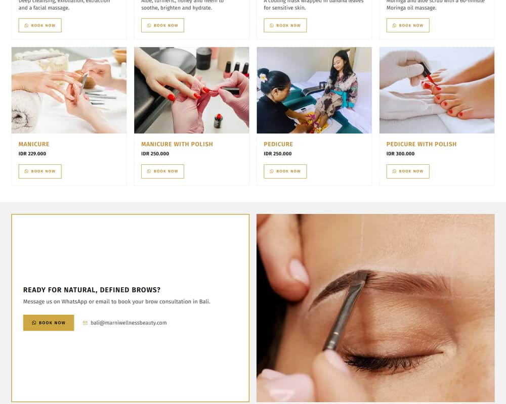
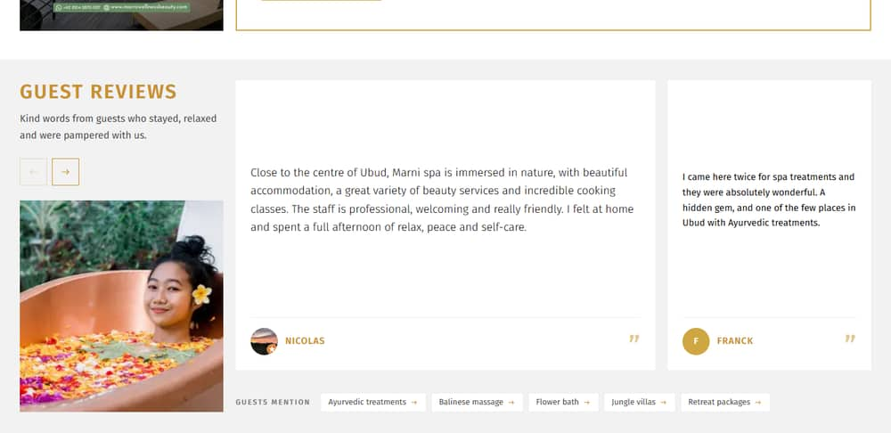
components/ReviewCard.tsx).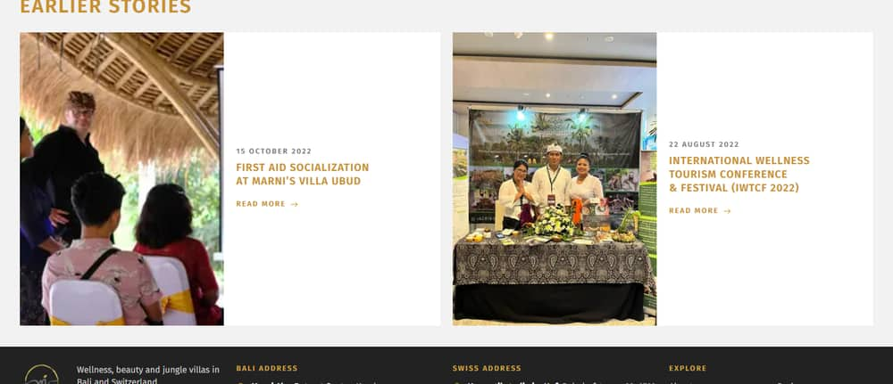
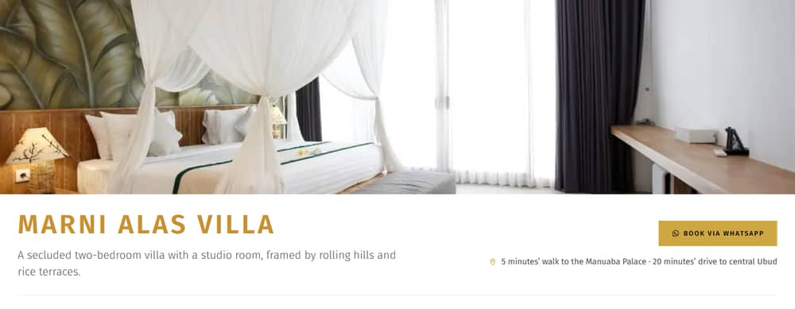
mt-auto). Consider making the whole card the link, with one WhatsApp CTA per section.w-full sm:w-auto) so their edges line up.lg:items-baseline in the plain variant of components/PageHero.tsx.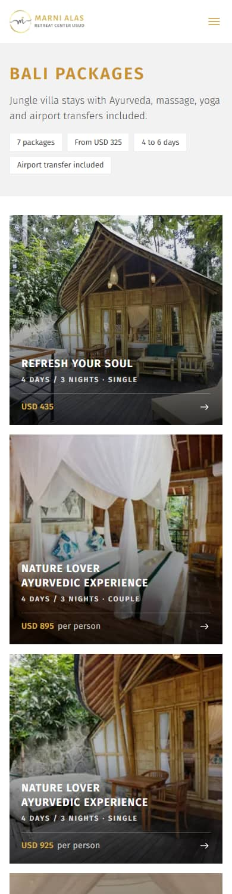
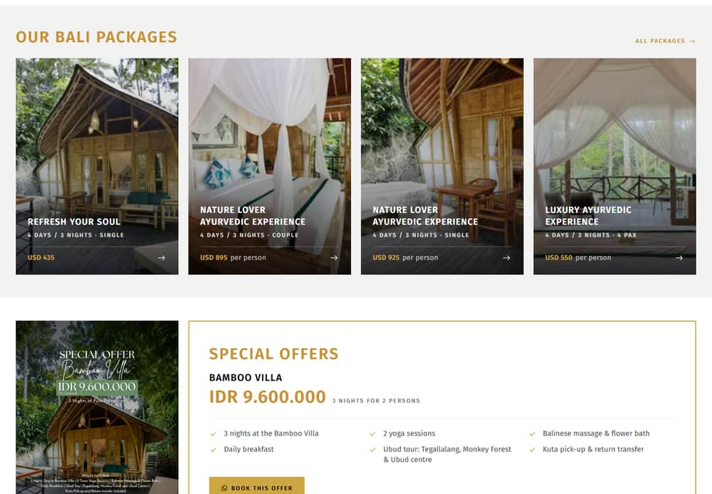
<link rel="canonical">. With trailingSlash: true, old WordPress redirects and a [slug] catch-all, duplicate URLs are likely.alternates: { canonical: "./" } to the root metadata (with metadataBase already set) or per page.metadata = { title: "Page not found" } from app/not-found.tsx.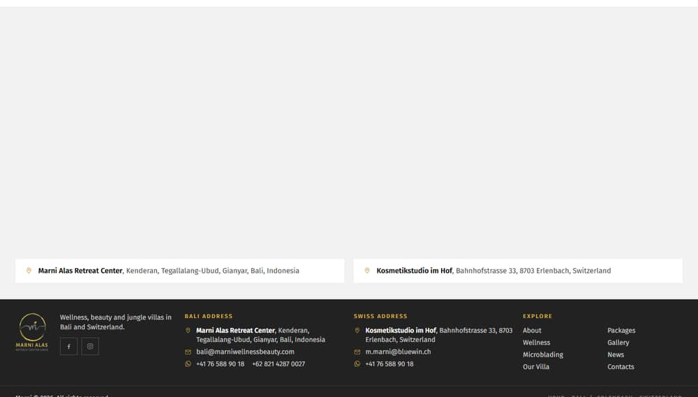
| Page | Main issues | Findings |
|---|---|---|
Home / | Generic dark hero, Treatwell screenshot, poster image, mixed currencies, review type sizes, half-empty cards | A1 B1 C2 C3 C4 E1 E2 E3 |
About /bali/ | Uniform-logo "Beauty" tile, strip crops, tall blurry "Stay" photo, empty right third | A1 B1 B3 B5 C1 E6 |
| Wellness | Blurry 800px hero, crowded tabs, sliver thumbnails on mobile, 11 Book buttons, H1→H3 | A1 B2 B4 C7 C8 D4 F3 |
| Microblading | Seamed stock collage, mixed stock/real photos, empty CTA box, black heading | A1 B1 B4 C2 C8 E7 |
| Villa | Soft hero and carousels, disconnected title row, chip overload, stretched facilities section | A1 B2 B6 C1 C6 D3 |
| Packages | Duplicate names, unit inconsistency, crowded "How to book", blurry side photo, H1→H3 | B3 B6 D1 D4 E1 E2 F3 |
| Package detail | Tall cropped "More packages" cards, duplicate names | B3 E1 E2 |
| Gallery | Watermarked photo, generic alt text, blurry closer tiles, heading misalignment | A5 B1 B3 C10 |
| News / post | Soft hero, half-empty cards, 2022 content, one-sentence posts | B2 C5 E4 F4 |
| Contacts | Swiss number first on the Bali card, map area blank, stretched final section | C1 E5 F5 |
| 404 | Home title, catalogue-texture hero | B1 F2 |
The deployable site is already small. Vercel uploads the source (about 15 MB, almost all of it public/images) and builds it remotely. The 365 MB .next folder on this machine is local build cache: it's gitignored and never uploaded.
| Change | Effect | Status |
|---|---|---|
| Recompressed 11 images (mozjpeg q82 / palette PNG, kept only where the file shrank ≥5%) | public/images 14.70 MB → 14.42 MB. The fetch script had already compressed them well. | Done |
.vercelignore excludes /audit, /scripts, *.md, build caches | This report and the scripts never go into a deployment | Done |
images.deviceSizes 8 → 4 widths, imageSizes 7 → 3, qualities [75, 85] → [75] (85 was never used) | Each photo gets about half as many optimised variants, so fewer Vercel image transformations and less image-cache storage | Done |
images.minimumCacheTTL 4 h → 31 days | Optimised images are re-generated far less often. The image paths are dated, so to change a photo, add it under a new name. | Done |
| Convert sources to WebP (−16%) or AVIF (−44%) | Not worth it: every reference in data/ would need renaming, and next/image already serves WebP to browsers | Skipped |
| Replace the two Google Maps iframes with a static image and link | Saves roughly 1 MB of third-party JS per map view (bandwidth, not storage) | Recommended |
alt attribute; decorative ones are correctly empty.:focus-visible outlines, and a real dialog for the mobile menu that closes on Escape.data/image-sizes.json) are reserved up front.